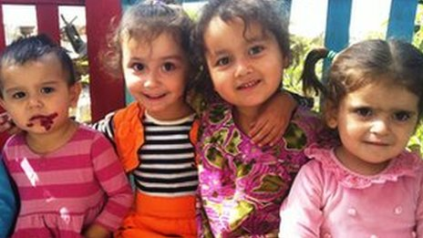

پذيرش > اخبار > اپیدمی طلاق در بین زنان تاجیکستان


 اپیدمی طلاق در بین زنان تاجیکستان اپیدمی طلاق در بین زنان تاجیکستان
23 مهر 1391 - - نسخه قابل چاپ
بی بی سی: طلاق زنان تاجیک توسط شوهرانشان که در روسیه مشغول به کار هستند، به معضل جدی اجتماعی در این کشور تبدیل شده است.
گلخمار ۳۳ ساله است. او در حالی که سعی میکند با شاخههای خشک جارویی درست کند تا حیاط خانه والدینش را تمیز کند میگوید: "زمانی که به خانه پدریام برگشتم، دختر کوچکم ۴ ساله بود. اما حالا او ۸ سالش هست."
گلخمار با ۴ دخترش در یک اتاق زندگی میکند. دو برادر و خانوادههای آنها هم در همین خانه زندگی میکنند.
اعضای خانواده گلخمار هنوز هم او را بخاطر این که به همراه ۴ فرزندش به خانه بازگشته، سرزنش میکنند.
اما گلخمار پس از آن که همسرش پس از ۱۲ سال زندگی مشترک، او را طلاق داد، جایی به جز خانه پدری نداشت.
گلخمار میگوید: "شوهرم در روسیه کار میکند. او تنها چند ماه خانه میآمد و بعد مجبور بود که برای یک یا دو سال ما را ترک کند. پولی هم که میفرستاد مستقیم به دست خانواده اش میرسید."
او میگوید که شوهرش از طریق تلفن او را طلاق داد.
طلاق های سریع
تاجیکستان از جمله کشورهای مسلمانی است که مردان در این کشور میتوانند با سه بار تکرار کلمه "طلاق" از همسرشان جدا شوند، فرقی نمیکند که این کار از طریق تلفن و یا با فرستادن پیامک و یا حتی رودر رو صورت بگیرد.
هر چند که کمیته امور مذهبی این کشور سال گذشته چنین اقدامی را غیرقانونی اعلام کرد، اما انجام آن همچنان در بین مردان این کشور مرسوم است.
بسیاری از زنان دهکدهای که گلخمار در آن زندگی می کند، دارای موقعیت مشابهی هستند. این دهکده در جنوب تاجیکستان در منطقه ختلان واقع شده است.
زینب ۲۳ ساله تنها یک ماه از ازدواجش با یک کارگر مهاجر در روسیه میگذشت که شوهرش او را طلاق داد.
او برای گرفتن مهریهاش از سازمان غیرانتفاعی محلی خمروز درخواست کمک کرده است.
گلمیرا عبدالجباروا از کارکنان این سازمان غیرانتفاعی است.
او میگوید: "در هر دهکده ای شمار زیادی از زنان تاجیک هستند که شوهرانشان به خاطر کار آنها را رها کرده اند. ما در تلاشیم تا ردی از همسران این زنها در روسیه پیدا کنیم. اما تلاش های ما همیشه نتیجه نمیدهد."
به گفته گلمیرا مشکل اصلی این زنان پس از طلاق، داشتن سرپناهی برای زندگی است. شوهران این زنان پولی پس از طلاق به آنها پرداخت نمیکنند. بزرگ کردن بچهها برای این زنان امری دشوار است.
تاجیکستان کشوری فقیر با فرصتهای شغلی محدود است. دستمزدها در این کشور بسیار اندک است.
بیش از یک میلیون تاجیک یعنی یک سوم جمعیت بالغ این کشور، برای کار به روسیه رفتهاند.
پولی که این افراد برای خانوادههایشان میفرستند نزدیک به نیمی از تولید ناخالص داخلی کشور را شامل میشود.
در حال حاضر به شمار مردان تاجیکی که ترجیح میدهند به کشورشان برنگردند، افزوده شده است.
خانواده های آسیبپذیر
آمار رسمی نشان میدهد که نرخ طلاق در این کشور تنها در سال جاری ۱۴.۳ درصد افزایش داشته است.
این در حالی است که به گفته ناظران با توجه به این که بسیاری از ازدواج ها و طلاقها به طور رسمی ثبت نمیشوند، آمار واقعی طلاق بالاتر از این میزان است.
گفته میشود ازدواج و طلاق در بسیاری از مناطق روستایی تاجیکستان براساس سنت های اسلامی صورت میگیرد.
برای گلخمار و سایر زنانی که در مناطق روستایی این کشور زندگی میکنند جمع آوری پنبه یکی از راههای کسب درآمد است.
اگر شانس با گلخمار و فرزندانش باشد میتوانند در یک روز با جمع آوری ۱۵۰ کیلو پنبه، اندکی بیش از ۱۰ دلار درآمد داشته باشند.
به کار گماردن کودکان رسما در تاجیکستان غیرقانونی است، اما براساس تحقیقی که صندوق حمایت از کودکان سازمان ملل انجام داده، کودکانی که پدرانشان آنها را رها میکنند چاره ای جز کار کردن ندارند.
آرتور ون دیزن، نماینده یونیسف در تاجیکستان میگوید: "اگر والدین از کودکانشان حمایت نکنند، واضح است که خانواده بسیار آسیب پذیر میشود."
به گفته نماینده یونیسف، کودکان در چنین شرایطی تحت انواع تاثیرات منفی قرار دارند. آنها مجبور به ترک تحصیل و کار کردن در سنین کودکی هستند. تاثیرات روانی، اجتماعی بر روی این کودکان بسیار شدید است.

یتیم های تحت فشار
در موارد نادری، والدین مهاجر فرزندانشان را به یتیم خانه ها میسپارند.
دکتر نظیره محمدجاناوا، از مرکز توانبخشی کیشتی، میگوید: "تجربه به ما ثابت کرده زمانی که کودکی به اینجا آورده میشود و والدینش میگویند که موقتا این جا خواهد بود، ما میدانیم که احتمال بازگشت آنها برای تحویل فرزندشان کم است."
کارگران مهاجر به اقتصاد تاجیکستان کمک میکنند، اما هزینههای اجتماعی جبران ناپذیری بر جامعه این کشور تحمیل میشود ، هزینههایی که آسیب پذیرترین قشر جامعه باید آن را بپردازند.
ارسال به
بالاترین
،
توییتر
،
فریندفید
،
فیسبوک
در همين بخش :
 پروین ذبیحی برنده جایزه حقوق بشری سازمان غيردولتى اتريشى سودويند شد پروین ذبیحی برنده جایزه حقوق بشری سازمان غيردولتى اتريشى سودويند شد
پخش کارت پستال و بروشور در روز جهانی زن در تهران
تمدید زمان برای امضای بیانیهی جمعی از فعالان زن به مناسبت هشت مارس
مجوزی که در نطفه خفه شد
بیش از 2000 امضا در اعتراض به تبعیض های آموزشی به مجلس تحویل داده شد
ديگر بخش ها :
طرح یک میلیون امضا
|
مقالات
|
سایت نوشته ها
|
اخبار
|
گزارش كمپين
|
گفت و گو
|
علیه سکوت
|
كوچه به كوچه
|
نامه های شما
|
گزارش ویژه
|
گفتگو با اعضا
|
ویژه سالگرد کمپین
|
تصویر برابری
|
دل آرام علی
|
تریبون
|
مقالات
|
تاریخ شفاهی
|
خارج از چارچوب
|
کتابخانه
|
درباره کمپین
|
کمپین در شهرها
|
کمپین در بند
|
صدای تغییر
|
ویژه 22 خرداد
|
لایحه حمایت از خانواده
|
گالری
|
عشا مومنی
|
امیر یعقوبعلی
|
خدیجه مقدم
|
راحله عسگری زاده و نسیم خسروی
|
پروین اردلان،جلوه جواهری، مریم حسین خواه، ناهید کشاورز
|
زینب پیغمبرزاده
|
سعیده امین، سارا ایمانیان، محبوبه حسین زاده، ناهید کشاورز و همایون نامی
|
احترام شادفر
|
نسیم سرابندی زاده،فاطمه دهدشتی
|
وبلاگ مهمان
|
پرونده خرم آباد
|
دستگیری ها
|
مریم مالک
|
پرستو اللهیاری
|
مهرنوش اعتمادی
|
سمیه رشیدی
|
Other Languages
|
همراهان
|
«فراخوان کمپین ده روز با بهاره هدایت»
| English
|